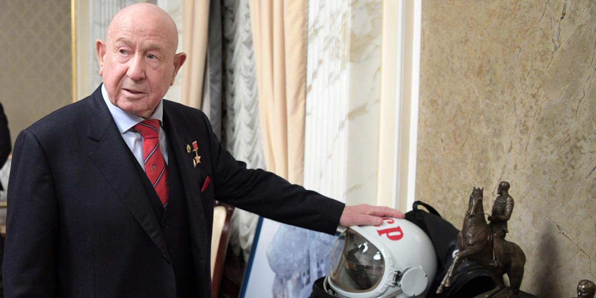

Алексей Леонов
Первый человек в истории, вышедший в открытый космос.

12 минут вне корабля
18 марта 1965 года Алексей Леонов совершил то, что до него не делал никто — он покинул шлюз космического корабля «Восход-2» и оказался в открытом космосе. Он провёл вне корабля 12 минут и 9 секунд. В то время скафандры были ещё несовершенны, и этот выход был смертельно опасным.
Художник космоса
Помимо полетов, Алексей Леонов был талантливым художником. Он первым начал рисовать космические пейзажи, которые видел своими глазами. Его картины хранятся в музеях и частных коллекциях по всему миру.
А ты знал?
Во время выхода в космос скафандр Леонова раздулся настолько, что он не мог вернуться обратно в корабль. Ему пришлось стравить давление (выпустить часть воздуха), чтобы протиснуться в шлюз. Это был настоящий подвиг и риск для жизни!